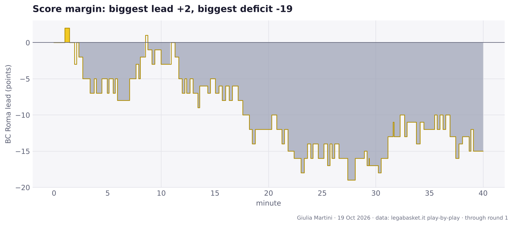
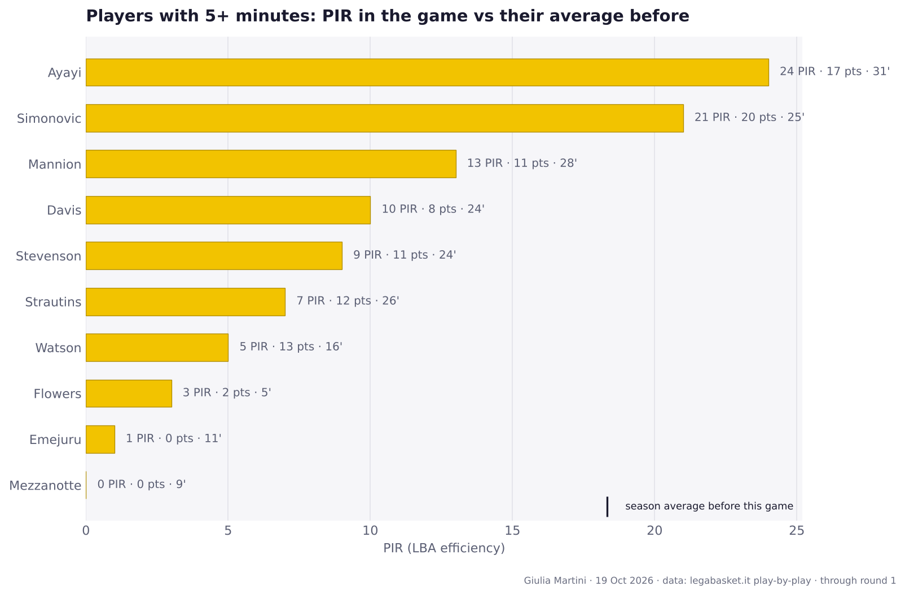
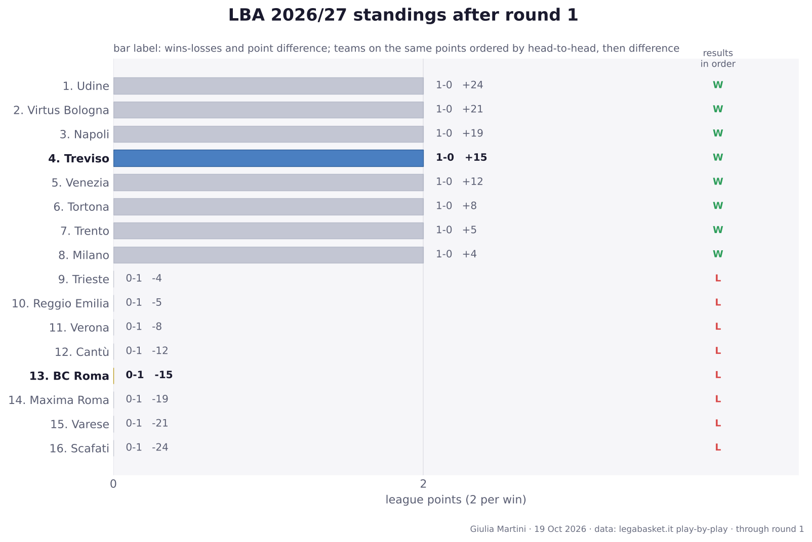
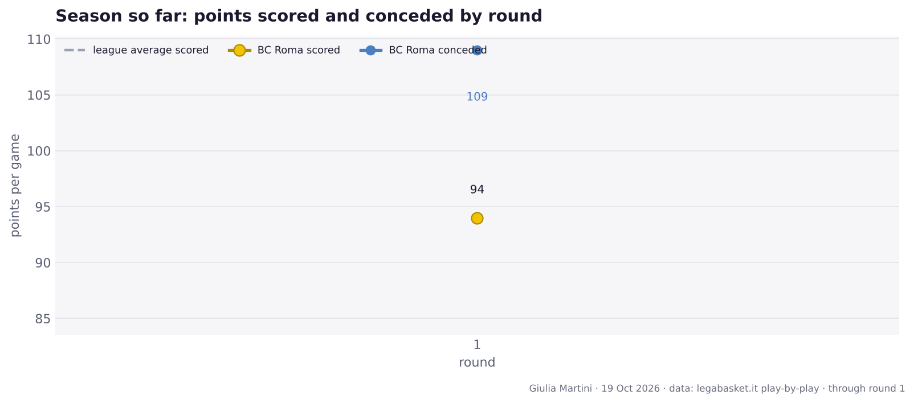

BC Roma lost to Treviso, 94-109
Round 1 · Saturday 26 September 2026 · Palaverde, Villorba · 4122 spectators
Record: 0-1 · 13th in the standings
Author: Giulia Martini
The game in numbers
| Q1 | Q2 | Q3 | Q4 | Final | |
|---|---|---|---|---|---|
| BC Roma | 26 | 19 | 22 | 27 | 94 |
| Treviso | 29 | 28 | 27 | 25 | 109 |

Team numbers
| BC Roma | Treviso | |
|---|---|---|
| Points | 94 | 109 |
| Possessions | 76.2 | 79.4 |
| Off. rating | 123.3 | 137.3 |
| eFG% | 56.3 | 60.9 |
| TOV% | 15.7 | 8.8 |
| OREB% | 43.2 | 34.3 |
| FT rate (FTA/FGA) | 29.6 | 50.7 |
| 3P | 12/36 | 8/23 |
| 2P | 22/35 | 30/46 |
| FT | 14/21 | 25/35 |
| Assists | 22 | 23 |
| Turnovers | 12 | 7 |
| Rebounds | 39 | 33 |
eFG% = (2P + 1.5 × 3P) / FGA · TOV% = turnovers per 100 possessions · OREB% = share of available offensive rebounds · FT rate = free throw attempts per field goal attempt.
Players

Playing time
No player had a significant increase in playing time (flag: at least 8' played and either +7' or +30% versus the average in earlier games).
Full box score, BC Roma
| Player | Min | Pts | 2P | 3P | FT | Reb | Ast | TOV | Stl | PIR | +/- | | --- | ---: | ---: | ---: | ---: | ---: | ---: | ---: | ---: | ---: | ---: | ---: | | **Ayayi** | 31 | 17 | 6/8 | 1/2 | 2/2 | 6 | 4 | 2 | 1 | 24 | -12 | | **Mannion** | 28 | 11 | 1/3 | 2/8 | 3/4 | 3 | 7 | 0 | 0 | 13 | -24 | | **Strautins** | 26 | 12 | 2/6 | 2/6 | 2/2 | 6 | 2 | 2 | 0 | 7 | -8 | | **Simonovic** | 25 | 20 | 8/10 | 1/2 | 1/2 | 8 | 0 | 3 | 0 | 21 | -10 | | Davis | 24 | 8 | 3/4 | 0/4 | 2/2 | 2 | 4 | 1 | 2 | 10 | -2 | | Stevenson | 24 | 11 | 1/2 | 3/7 | 0/0 | 2 | 3 | 1 | 2 | 9 | +1 | | Watson | 16 | 13 | 1/1 | 3/6 | 2/7 | 1 | 1 | 2 | 0 | 5 | +0 | | Emejuru | 11 | 0 | 0/1 | 0/0 | 0/0 | 3 | 0 | 1 | 1 | 1 | -8 | | **Mezzanotte** | 9 | 0 | 0/0 | 0/0 | 0/0 | 1 | 0 | 0 | 0 | 0 | -12 | | Flowers | 5 | 2 | 0/0 | 0/1 | 2/2 | 1 | 1 | 0 | 0 | 3 | +3 | | Iuzzolino | 1 | 0 | 0/0 | 0/0 | 0/0 | 0 | 0 | 0 | 0 | 0 | -3 | Bold = starter.Full box score, Treviso
| Player | Min | Pts | 2P | 3P | FT | Reb | Ast | TOV | Stl | PIR | +/- | | --- | ---: | ---: | ---: | ---: | ---: | ---: | ---: | ---: | ---: | ---: | ---: | | **Macura** | 31 | 31 | 8/10 | 2/6 | 9/11 | 4 | 1 | 1 | 5 | 37 | +20 | | **Chapman** | 28 | 6 | 1/2 | 0/3 | 4/10 | 2 | 3 | 1 | 1 | 8 | +16 | | **Russell** | 28 | 20 | 6/10 | 2/5 | 2/2 | 1 | 7 | 2 | 3 | 21 | +13 | | Cappelletti | 24 | 15 | 4/8 | 1/2 | 4/4 | 5 | 9 | 1 | 0 | 23 | +8 | | **Carter** | 24 | 3 | 0/1 | 1/1 | 0/0 | 3 | 3 | 0 | 0 | 8 | +2 | | **Anigbogu** | 20 | 13 | 4/5 | 0/0 | 5/7 | 4 | 0 | 1 | 0 | 15 | +10 | | Chery | 19 | 15 | 7/8 | 0/0 | 1/1 | 4 | 0 | 1 | 0 | 14 | +7 | | Chillo | 13 | 6 | 0/1 | 2/3 | 0/0 | 3 | 0 | 0 | 0 | 5 | -5 | | Miaschi | 7 | 0 | 0/1 | 0/2 | 0/0 | 0 | 0 | 0 | 0 | -4 | -2 | | Allinei | 6 | 0 | 0/0 | 0/1 | 0/0 | 0 | 0 | 0 | 0 | -2 | +6 | Bold = starter.Round 1 across the league
- Treviso 109-94 BC Roma
- Venezia 85-73 Cantù
- Reggio Emilia 78-83 Trento
- Milano 83-79 Trieste
- Tortona 101-93 Verona
- Udine 87-63 Scafati
- Maxima Roma 75-94 Napoli
- Varese 69-90 Virtus Bologna

Standings table
| # | Team | Pts | W-L | Diff | Results | | ---: | --- | ---: | :---: | ---: | :---: | | 1 | Udine | 2 | 1-0 | +24 | W | | 2 | Virtus Bologna | 2 | 1-0 | +21 | W | | 3 | Napoli | 2 | 1-0 | +19 | W | | 4 | Treviso | 2 | 1-0 | +15 | W | | 5 | Venezia | 2 | 1-0 | +12 | W | | 6 | Tortona | 2 | 1-0 | +8 | W | | 7 | Trento | 2 | 1-0 | +5 | W | | 8 | Milano | 2 | 1-0 | +4 | W | | 9 | Trieste | 0 | 0-1 | -4 | L | | 10 | Reggio Emilia | 0 | 0-1 | -5 | L | | 11 | Verona | 0 | 0-1 | -8 | L | | 12 | Cantù | 0 | 0-1 | -12 | L | | 13 | **BC Roma** | 0 | 0-1 | -15 | L | | 14 | Maxima Roma | 0 | 0-1 | -19 | L | | 15 | Varese | 0 | 0-1 | -21 | L | | 16 | Scafati | 0 | 0-1 | -24 | L |Season so far

Next up
Round 2: Tortona (home), 2026-10-04 at 16:00.